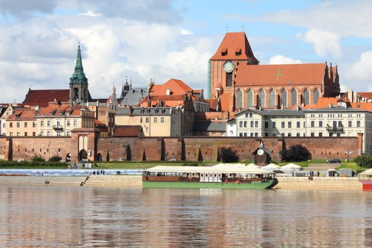

ŚREDNIOWIECZNY ZESPÓŁ MIEJSKI TORUNIA

Toruń zawdzięcza swe początki Zakonowi Krzyżackiemu, który w połowie XIII w. zbudował tu zamek, mający służyć za bazę wypadową do podboju i ewangelizacji Prus. Miasto, należące do Hanzy, wkrótce zaczęło odgrywać istotną rolę handlową. O jego randze świadczą liczne okazałe, XIV i XV-wieczne budowle publiczne i prywatne (m.in. Dom Kopernika), wznoszące się na Starym i na Nowym Mieście.